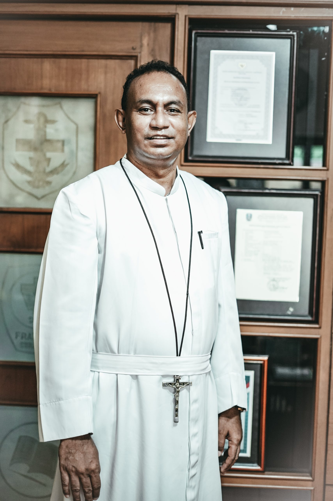

Sambutan Kepala Sekolah

Salam sejahtera bagi kita semua,
Puji syukur kita panjatkan kepada Tuhan Yang Maha Esa atas berkat dan rahmat-Nya, sehingga kita dapat bersama-sama memulai perjalanan baru dalam mewujudkan visi misi SMA Katolik Frateran. Frateran memiliki tekad untuk menjadi sekolah yang berorientasi pada mutu, berbasis teknologi, dan mampu mencetak lulusan yang berkualitas dan berdaya saing tinggi.
Kita percaya bahwa pendidikan adalah investasi jangka panjang yang akan membentuk masa depan generasi muda kita. Oleh karena itu, di SMA Katolik Frateran, kami berkomitmen untuk memberikan pendidikan yang holistik dan berkualitas, yang tidak hanya fokus pada aspek akademik, tetapi juga mengutamakan pengembangan karakter, moral, dan spiritual siswa.
Kepada para siswa, kami mengingatkan agar selalu memiliki semangat belajar yang tinggi, berkomitmen untuk berprestasi, dan melibatkan diri dalam berbagai kegiatan ekstrakurikuler yang telah disediakan. Kepada para orang tua, kami mengajak untuk terlibat aktif dalam mendukung pendidikan anak-anak mereka dan bekerja sama dengan sekolah.
Sekali lagi, saya ucapkan selamat datang di SMA Katolik Frateran Surabaya. Bersama-sama, mari kita menjalani perjalanan pendidikan yang bermakna dan meraih masa depan yang cerah. Tuhan memberkati kita semua!
Fr. M. Wilhelmus Satel Sura, BHK., S.Pd., M.M.
Kepala SMA Katolik Frateran Surabaya
Visi
Menjadi Komunitas Pembelajar yang Berkualitas unggul, Berkepribadian utuh dalam Spiritualitas Hati, dan Bersinergi membangun peradaban kasih, dilandasi semangat "In Sollicitudine et Simplicitate".
Misi
- Menyelenggarakan pendidikan holistik yang menumbuh-kembangkan iman, ilmu, dan karakter luhur seturut Spiritualitas Hati dan teladan Bunda Hati Kudus, dalam semangat "In Sollicitudine et Simplicitate".
- Mengembangkan potensi setiap pribadi secara berkualitas melalui pembelajaran inovatif, kreatif, kolaboratif, dan komunikatif untuk menjawab tantangan zaman.
- Membangun komunitas sekolah sebagai persaudaraan sejati yang bersinergi, saling peduli, menghargai keberagaman, dan siap melayani sesama.
- Membentuk pribadi yang berintegritas, bertanggung jawab, dan berjiwa kepemimpinan transformatif untuk berkontribusi positif pada Gereja dan bangsa.
- Menyediakan dan mengelola sarana prasarana serta seluruh sumber daya sekolah secara bertanggung jawab, efektif, efisien, dan berkelanjutan dalam semangat ugahari demi mendukung tercapainya tujuan pendidikan yang luhur.
Motto
Hati Mengabdi, Prestasi Menginspirasi
Makna Logo
| Unsur | Makna |
|---|---|
| Empat Sudut | Sebagai empat penjuru angin, berarti menjurus ke segala arah. |
| Bingkai Lengkung | Lentur, selalu menyesuaikan pada situasi dan kondisi. |
| Lingkaran | Bulat, mempunyai tekad bulat, berkemauan kuat. |
| Obor | Lambang pemberi sinar terang sebagai suluh. |
| Salib Putih | Kasih yang suci. |
| Buku | Sumber ilmu pengetahuan dan pendidikan. |
| Warna | Makna |
|---|---|
| Biru | Lambang harapan. |
| Kuning | Lambang keagungan. |
| Merah | Lambang keberanian. |
| Putih | Lambang kesucian. |
Sejarah Singkat
SMA Katolik Frateran Surabaya berdiri pada tahun 1963 dan bernaung di bawah Yayasan Mardi Wiyata yang dikelola oleh Kongregasi Frater-Frater Bunda Hati Kudus (BHK). Berikut beberapa peristiwa penting dalam perjalanan sekolah:
| Tahun | Peristiwa |
|---|---|
| 1963 | Pada tanggal 13 Agustus 1963 SMA Katolik Frateran resmi berdiri dengan kepala sekolah Frater R.A. Dwijosawito (Frater Adolfus), menempati gedung SMPK Angelus Custos dengan semua murid putra. |
| 1967 | Menempati gedung baru 2 lantai yang menjadi cikal bakal gedung sekarang. |
| 1971 | Pertama kali menerima murid putri, dengan komposisi 24 murid putri dan 168 murid putra. |
| 1984 | Selesai dibangunnya laboratorium tiga lantai meliputi laboratorium Fisika, Kimia, Biologi, Bahasa, dan Komputer. |
| 2005 | Mendapatkan status "Terakreditasi A" dari Badan Akreditasi Sekolah Jawa Timur. |
| 2007 | Pemberkatan dan penggunaan gedung baru perpustakaan dan laboratorium. |
| 2008 | Menyelenggarakan Science Class, yaitu kelas khusus untuk jurusan IPA. |
| 2019 | Menyelenggarakan kelas Social Science (SSc) untuk jurusan IPS. Science Class selanjutnya disebut kelas Natural Science (NSc). |
| 2022 | Memperoleh akreditasi A (Unggul) berdasarkan keputusan Badan Akreditasi Nasional No. 1359/BAN-SN/SK/2022. |
Sumber: frateran.sch.id/sejarah-frateran. Linimasa lengkap tersedia di website resmi sekolah.